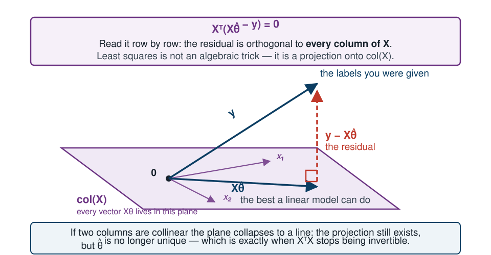
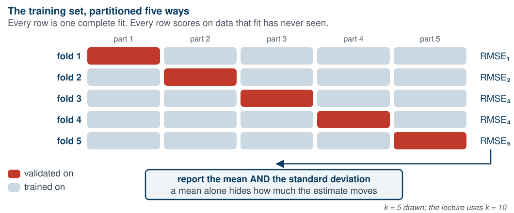
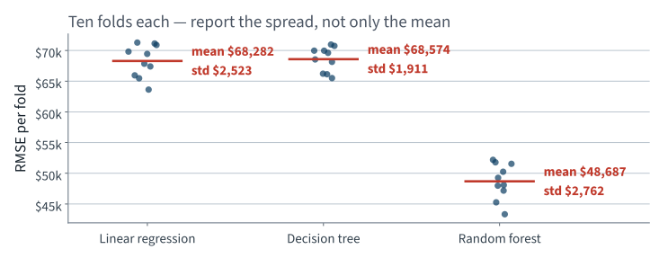
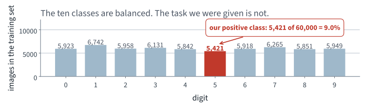
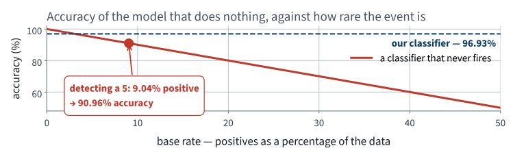
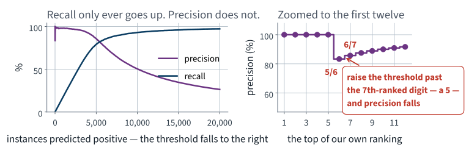
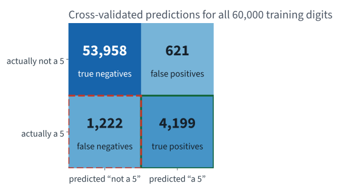
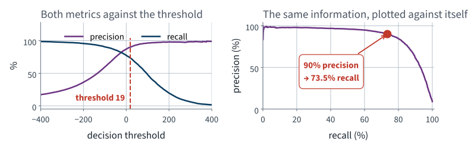
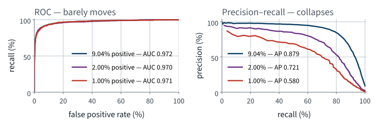

California housing, finished · MNIST, detecting one digit
Lecture 3 Géron Ch. 2–3
Applications of Machine Learning
BSc Mathematics of Artificial Intelligence · Third year
Measured on one run of this lecture’s notebook; hardware, library versions and random seeds can make a re-run differ slightly.
Last lecture, on the California housing data:
| What we did | What it leaves for today |
|---|---|
| Sealed a stratified test set of 4,128 districts before looking at anything | a test set that must stay unused until the very end |
| Explored the 16,512 training districts, and warned against new features that are weighted sums of old ones | today shows why that warning is about linear algebra |
| Wrote least squares as minimising $\lVert\mathbf{X}\boldsymbol\theta - y\rVert_2^2$, and set its gradient to zero | the stationarity condition $\mathbf{X}^{\intercal}\mathbf{X}\hat{\boldsymbol\theta} = \mathbf{X}^{\intercal}y$, not yet solved |
| Proved the cost convex, so that stationary point is a global minimum | a minimum we now have to compute, and a model whose error we have to measure |
Nothing has been fitted and nothing has been scored yet. Today does both — and then asks what a score is worth on a classification problem.
Measured on one run of this lecture’s notebook; hardware, library versions and random seeds can make a re-run differ slightly.
examinable The normal equation and its invertibility condition; leakage and why cross-validation needs a pipeline; the accuracy of the never-fires classifier; precision, recall, $F_1$, PR and ROC.
Last lecture’s stationarity condition, $\mathbf{X}^{\intercal}\mathbf{X}\hat{\boldsymbol\theta} = \mathbf{X}^{\intercal}y$, rearranged:
A closed-form solution — no iteration required
A closed-form equation is composed only of a finite number of constants, variables and standard operations. No infinite sums, no limits, no integrals.
Animation
The normal equation needs $(\mathbf{X}^{\intercal}\mathbf{X})^{-1}$, and it exists if and only if $\mathbf{X}$ has linearly independent columns. Two ways to lose that:
examinable Derive the normal equation; state and justify the invertibility condition.
Fit an unconstrained decision tree on the 16,512 training districts, then score it on those same 16,512 districts.
0.0
No error at all.
Two explanations. Only one of them is flattering.
Measured on one run of this lecture’s notebook; hardware, library versions and random seeds can make a re-run differ slightly.
No — not yet.
We are still choosing between models and tuning them. Every time a choice is made by looking at the test score, that score stops being an estimate of performance on unseen data and becomes a target we are fitting to.
The next slide puts this argument as an exam question. Answer 1 and 2 now; 3 and 4 need cross-validation, so they come once it exists, at the end of this half.
A score can also be corrupted before any model is fitted:
scaler = StandardScaler()
housing_scaled = scaler.fit_transform(housing_full) # all 20,640 rows
train_set, test_set = train_test_split(housing_scaled) # then split
It raises no exception and the reported score improves. How much it improves is not knowable from the code — sometimes nothing, sometimes everything — which is why the rule is procedural rather than a matter of judging each case.
fit() or fit_transform() on the validation set, the
test set, or new data. Once fitted, you may transform() anything.
This applies to imputers, scalers, encoders, dimensionality reduction — everything that learns anything from data.
We will not rely on remembering it. The next few slides build an object that makes violating it structurally impossible.
Split the training set again: a smaller training set, and a validation set (also called the development set). Train the candidates on the reduced set, select on the validation set, retrain the winner on the full training set, and evaluate once on the test set.
Validation set too small
Evaluations are imprecise; you may select a suboptimal model by chance.
Validation set too large
The remaining training set is much smaller than the full one — like selecting a sprinter to run a marathon.
Solution: many small validation sets, used in rotation.

Five fits to get one number — and a second number, the spread, that a single holdout could never give you.
Animation
Linear regression, a decision tree and a random forest, each scored by ten-fold cross-validation. All three spreads are around ±$2,000–$3,000 — and that is mostly which districts landed in the fold, not the model. Any difference smaller than this is not a difference.
full_pipeline = Pipeline([
("prep", preprocessing), # imputer + scaler on numbers, one-hot on ocean_proximity
("model", RandomForestRegressor(random_state=42)),
])
When cross_val_score holds out fold $j$, the entire pipeline
— imputer, encoder, scaler, model — is fitted on the other folds only.
The transformers never see the held-out fold. Leakage cannot occur by accident.
final_model = Pipeline([
("prep", preprocessing),
("model", RandomForestRegressor(n_estimators=200, max_features=8,
random_state=42)),
]).fit(X_train, y_train) # the training set, and only that
final_predictions = final_model.predict(X_test)
final_rmse = root_mean_squared_error(y_test, final_predictions)
$49,037
The forest’s two settings were chosen on
validation folds of the training set before this cell ran. We
predict on the test set; we never fit anything on
it, and we look at it once.
Measured on one run of this lecture’s notebook; hardware, library versions and random seeds can make a re-run differ slightly.
A national postal operator sorts handwritten postcodes automatically. A camera photographs each digit; a classifier reads it; the envelope goes down a chute.
Not “read the digit”. Detect one digit. Yes or no, one class against the other nine.
Measured on one run of this lecture’s notebook; hardware, library versions and random seeds can make a re-run differ slightly.
y_train_5 = (y_train == 5) # True for every 5, False otherwise
y_test_5 = (y_test == 5)
assert y_train_5.dtype == bool
assert y_train_5.sum() == 5421
print(f"{y_train_5.sum():,} positives out of {len(y_train_5):,}")
Two lines, and the imbalance is created. Nothing about MNIST is imbalanced; our question is.
Assert the count. OpenML delivers the labels as
strings, and a string never equals the integer 5: if they were not cast to
integers first, this assertion is what tells you — it fails at
0 == 5421 instead of silently training on nothing.
Measured on one run of this lecture’s notebook; hardware, library versions and random seeds can make a re-run differ slightly.

Every bar is roughly the same height. The moment we ask “is it a 5?”, one bar becomes the positive class and the other nine become the negative class.
Accuracy: the fraction of instances the classifier gets right.
The proportion of correct predictions
clf = make_pipeline(StandardScaler(), SGDClassifier(random_state=42))
cv = StratifiedKFold(n_splits=3, shuffle=True, random_state=42)
cross_val_score(clf, X_train, y_train_5, cv=cv, scoring="accuracy")
96.93%
Three-fold cross-validated accuracy of a linear classifier, on data the model never saw during its own fitting.
Folds: 96.85%, 96.86%, 97.09%. A spread of about two tenths of a point — the three folds agree. The scaler sits inside the pipeline, so each fold refits it on its own training part.
Measured on one run of this lecture’s notebook; hardware, library versions and random seeds can make a re-run differ slightly.
The cheapest possible detector. It looks at nothing and answers “not a 5” every time.
from sklearn.base import BaseEstimator
class NeverFires(BaseEstimator):
def fit(self, X, y=None):
return self
def predict(self, X):
return np.zeros(len(X), dtype=bool)
cross_val_score(NeverFires(), X_train, y_train_5, cv=cv,
scoring="accuracy") # array([0.90965, 0.90965, 0.90965])
It is right 54,579 times out of 60,000 — 90.96% accuracy, with no model, no fit and no features.
Measured on one run of this lecture’s notebook; hardware, library versions and random seeds can make a re-run differ slightly.
$P$ positives, $N$ negatives, $m = P + N$, base rate $p = P/m$. If $h_0(x) = 0$ for every $x$, then $\mathrm{TP} = \mathrm{FP} = 0$. Ours, $p = 0.09035$:

An identity, not an estimate — and at a base rate of 1%, doing nothing scores 99%.
Measured on one run of this lecture’s notebook; hardware, library versions and random seeds can make a re-run differ slightly.
Predict positive when the score $s(x) \ge t$. Raising $t$ only ever removes instances from the flagged set, so $\mathrm{TP}(t)$ and $\mathrm{FP}(t)$ can only fall. Recall divides $\mathrm{TP}(t)$ by $P$, a constant of the data, so it can only fall too.
Here both the numerator and the denominator move, in the same direction. A ratio of two decreasing quantities can do anything at all.

The right-hand panel zooms in on the top of our own ranking: the seventh-ranked digit is a 5, and raising the threshold past it takes precision from 6/7 down to 5/6.

1,222 fives went past unflagged — 22.5% of every 5 in the training set.
Measured on one run of this lecture’s notebook; hardware, library versions and random seeds can make a re-run differ slightly.
Both mistakes are visible, separately, and they are not the same size or the same kind. Accuracy added them together and divided by 60,000.
Measured on one run of this lecture’s notebook; hardware, library versions and random seeds can make a re-run differ slightly.
from sklearn.metrics import precision_score, recall_score, f1_score
precision_score(y_train_5, y_pred) # 0.8712 — 4199 / (4199 + 621)
recall_score(y_train_5, y_pred) # 0.7746 — 4199 / (4199 + 1222)
f1_score(y_train_5, y_pred) # 0.8200
Recall is also called sensitivity or the true positive rate. Three names, one quantity; the third one comes back on the ROC curve later today.
$F_1$ is the harmonic mean of precision and recall:
Ours is 82.00%. The harmonic mean is pulled towards the smaller of the two numbers it combines, so a high $F_1$ needs both precision and recall to be high — one good number cannot carry a bad one.
Measured on one run of this lecture’s notebook; hardware, library versions and random seeds can make a re-run differ slightly.
Raising recall lowers precision, and lowering recall raises it — usually.
“Usually” is doing real work in that sentence, and counting every step down our own ranking says exactly how much: precision rises at 54,579 of the steps and falls at 5,416 of them. The trend is reliable; the individual step is not.
Measured on one run of this lecture’s notebook; hardware, library versions and random seeds can make a re-run differ slightly.

Precision starts to fall off a cliff at about 80% recall. Choose the operating point just before the cliff, not on it.
import numpy as np
flagged = recalls[:-1] * n_pos / precisions[:-1] # tp / precision = tp + fp
ok = (precisions[:-1] >= 0.90) & (flagged >= 500) # and enough flagged
idx = int(np.argmax(ok)) # first crossing WITH support
threshold_90 = thresholds[idx] # 18.95
y_pred_90 = (y_scores >= threshold_90)
print(precision_score(y_train_5, y_pred_90)) # 0.9001
print(recall_score(y_train_5, y_pred_90)) # 0.7347
argmax on a boolean array returns the first
True. The idiom is compact and it is not obvious; read it once
and remember it.
Ninety per cent precision costs us 3.98 points of recall, from 77.46% down to 73.47%.
Measured on one run of this lecture’s notebook; hardware, library versions and random seeds can make a re-run differ slightly.
y_scores = clf.decision_function([some_digit])
print(y_scores) # e.g. array([1231.4])
threshold = 0
y_scores > threshold # array([ True])
threshold = 3000
y_scores > threshold # array([False]) — the same 5, missed
How a chosen threshold is applied. Every scoring classifier
computes a number and compares it to a threshold. predict() hides the number and hard-codes the
threshold at zero.
There is no set_threshold() method, and there
should not be. You compute the scores and you compare them yourself.
Same sweep, different pair of axes: the true positive rate against the false positive rate.
from sklearn.metrics import roc_curve, roc_auc_score
fpr, tpr, thresholds = roc_curve(y_train_5, y_scores)
roc_auc_score(y_train_5, y_scores) # 0.9723
Note that both denominators are fixed by the data. Neither axis moves when we change the threshold’s effect on the flagged count — which is precisely why the ROC curve behaves so much better than the PR curve, and why that is a warning rather than a recommendation.
AnimationThe reason is arithmetic. FPR divides false positives by $N$, which is huge when positives are rare, so a large number of false alarms produces a small, comfortable-looking FPR. Precision divides the same false positives by the flagged count, which is small.
Do not take that on trust. Measure it.
Our scores, unchanged; only the positives are thinned, so the base rate falls from 9.04% to 2% and then 1%.

Measured on one run of this lecture’s notebook; hardware, library versions and random seeds can make a re-run differ slightly.
forest = RandomForestClassifier(
n_estimators=100, random_state=42)
y_proba = cross_val_predict(
forest, X_train, y_train_5, cv=cv,
method="predict_proba")
y_scores_forest = y_proba[:, 1]
A forest has no decision_function. The
positive-class column of predict_proba plays the role of the
score, and every curve works unchanged.
| Metric | SGD | Random forest |
|---|---|---|
| Accuracy | 96.93% | 98.77% |
| Precision | 87.12% | 98.93% |
| Recall | 77.46% | 87.31% |
| $F_1$ | 82.00% | 92.76% |
| ROC AUC | 0.9723 | 0.9984 |
| Average precision | 0.8788 | 0.9883 |
| Recall available at 90% precision | 73.47% | 97.51% |
Accuracy improves by 1.84 points, which reads as polish. The last row improves by 24.04 points, and it is the row the brief is about.
Measured on one run of this lecture’s notebook; hardware, library versions and random seeds can make a re-run differ slightly.
5 in
y_train == 5 — and re-run. The baseline moves, the
accuracy moves with it, and the pair tells you something neither does alone.
Measured on one run of this lecture’s notebook; hardware, library versions and random seeds can make a re-run differ slightly.
Pipeline inside cross-validation enforces itNot presented — for afterwards
five, in the style of the written paper
cross_val_score. Explain what would go wrong if the scaling were done once, before the call. [5]Solutions on Lecture 4’s deck.
Measured on one run of this lecture’s notebook; hardware, library versions and random seeds can make a re-run differ slightly.
Solutions on Lecture 4’s deck.
The five set at the end of Lecture 2
not part of this lecture
1. A colleague reports their model’s error on the California housing test set, and says they chose the…
It estimates the best-of-several error on that particular test set; it is not an estimate of the generalisation error, the error on new districts.
2. You are given a stratified split on income category and a naive random split of the same data. A model scored…
No.
3. On the training set, longitude has a correlation of $r = -0.05$ with the median house value. A colleague…
$r$ measures only a linear relationship, and price depends on location non-linearly. The geographic scatter coloured by price refutes it.
4. The course reports the RMSE of a regression model, yet training minimises the MSE. Explain why the two give…
The square root is strictly increasing on $[0, \infty)$, so $\arg\min \sqrt{f} = \arg\min f$. The RMSE is reported because it is in the units of the target, dollars.
5. The Hessian of the MSE of a linear model is $\tfrac{2}{m}\mathbf{X}^{\intercal}\mathbf{X}$. Show that it is…
For any $\mathbf{v}$, $\mathbf{v}^{\intercal}\mathbf{X}^{\intercal}\mathbf{X}\mathbf{v} = \lVert \mathbf{X}\mathbf{v}\rVert_2^2 \ge 0$. So the MSE is convex, and any stationary point is a global minimum.
Lecture 4 · Géron Ch. 4
Gradient descent, derived — the update rule, the step size, why the
features must be scaled, and one instance at a time
Logistic regression on the Titanic passengers: a probability, not a label,
and coefficients read as log-odds
Calibration, and softmax regression for more than two classes
Run the Lecture 3 notebook first